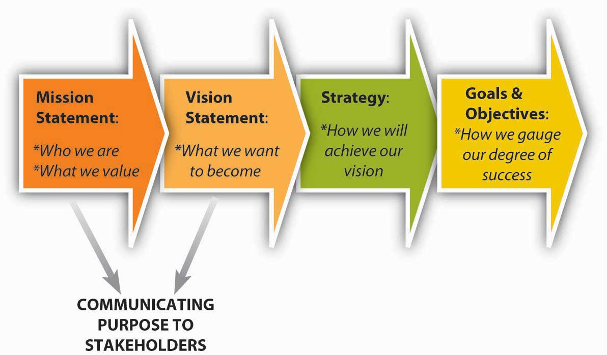

Mission and vision both relate to an organization’s purpose and are typically communicated in some written form. Mission and vision are statements from the organization that answer questions about who we are, what do we value, and where we’re going. A study by the consulting firm Bain and Company reports that 90% of the 500 firms surveyed issue some form of mission and vision statements.Bart, C. K., & Baetz, M. C. (1998). The relationship between mission statements and firm performance: An exploratory study. Journal of Management Studies, 35, 823–853. Moreover, firms with clearly communicated, widely understood, and collectively shared mission and vision have been shown to perform better than those without them, with the caveat that they related to effectiveness only when strategy and goals and objectives were aligned with them as well.Bart, C. K., Bontis, N., & Taggar, S. (2001). A model of the impact of mission statements on firm performance. Management Decision, 39(1), 19–35.
A mission statementA statement of purpose, describing who the company is and what it does. communicates the organization’s reason for being, and how it aims to serve its key stakeholders. Customers, employees, and investors are the stakeholders most often emphasized, but other stakeholders like government or communities (i.e., in the form of social or environmental impact) can also be discussed. Mission statements are often longer than vision statements. Sometimes mission statements also include a summation of the firm’s values. ValuesShared principles, standards, and goals. are the beliefs of an individual or group, and in this case the organization, in which they are emotionally invested. The Starbucks mission statement describes six guiding principles that, as you can see, also communicate the organization’s values:
Similarly, Toyota declares its global corporate principles to be:
A vision statementA future-oriented declaration of the organization’s purpose and aspirations., in contrast, is a future-oriented declaration of the organization’s purpose and aspirations. In many ways, you can say that the mission statement lays out the organization’s “purpose for being,” and the vision statement then says, “based on that purpose, this is what we want to become.” The strategy should flow directly from the vision, since the strategy is intended to achieve the vision and thus satisfy the organization’s mission. Typically, vision statements are relatively brief, as in the case of Starbuck’s vision statement, which reads: “Establish Starbucks as the premier purveyor of the finest coffee in the world while maintaining our uncompromising principles as we grow.”Retrieved October 27, 2008, from http://www.starbucks.com/aboutus. Or ad firm Ogilvy & Mather, which states their vision as “an agency defined by its devotion to brands.”Retrieved October 27, 2008, from http://www.ogilvy.com/o_mather. Sometimes the vision statement is also captured in a short tag line, such as Toyota’s “moving forward” statement that appears in most communications to customers, suppliers, and employees.Retrieved October 27, 2008, from http://www.toyota.com/about/our_values/index.html. Similarly, Wal-Mart’s tag-line version of its vision statement is “Save money. Live better.”Retrieved October 27, 2008, from http://www.walmart.com.
Any casual tour of business or organization Web sites will expose you to the range of forms that mission and vision statements can take. To reiterate, mission statements are longer than vision statements, often because they convey the organizations core values. Mission statements answer the questions of “Who are we?” and “What does our organization value?” Vision statements typically take the form of relatively brief, future-oriented statements—vision statements answer the question “Where is this organization going?” Increasingly, organizations also add a values statementA written statement that reaffirms or states outright the organization’s values that might not be evident in the mission or vision statements. which either reaffirms or states outright the organization’s values that might not be evident in the mission or vision statements.
Mission and vision statements play three critical roles: (1) communicate the purpose of the organization to stakeholders, (2) inform strategy development, and (3) develop the measurable goals and objectives by which to gauge the success of the organization’s strategy. These interdependent, cascading roles, and the relationships among them, are summarized in the figure.
Figure 4.5 Key Roles of Mission and Vision
First, mission and vision provide a vehicle for communicating an organization’s purpose and values to all key stakeholders. Stakeholders are those key parties who have some influence over the organization or stake in its future. You will learn more about stakeholders and stakeholder analysis later in this chapter; however, for now, suffice it to say that some key stakeholders are employees, customers, investors, suppliers, and institutions such as governments. Typically, these statements would be widely circulated and discussed often so that their meaning is widely understood, shared, and internalized. The better employees understand an organization’s purpose, through its mission and vision, the better able they will be to understand the strategy and its implementation.
Second, mission and vision create a target for strategy development. That is, one criterion of a good strategy is how well it helps the firm achieve its mission and vision. To better understand the relationship among mission, vision, and strategy, it is sometimes helpful to visualize them collectively as a funnel. At the broadest part of the funnel, you find the inputs into the mission statement. Toward the narrower part of the funnel, you find the vision statement, which has distilled down the mission in a way that it can guide the development of the strategy. In the narrowest part of the funnel you find the strategy —it is clear and explicit about what the firm will do, and not do, to achieve the vision. Vision statements also provide a bridge between the mission and the strategy. In that sense the best vision statements create a tension and restlessness with regard to the status quo—that is, they should foster a spirit of continuous innovation and improvement. For instance, in the case of Toyota, its “moving forward” vision urges managers to find newer and more environmentally friendly ways of delighting the purchaser of their cars. London Business School professors Gary Hamel and C. K. Prahalad describe this tense relationship between vision and strategy as stretch and ambition. Indeed, in a study of such able competitors as CNN, British Airways, and Sony, they found that these firms displaced competitors with stronger reputations and deeper pockets through their ambition to stretch their organizations in more innovative ways.Hamel, G., & Prahalad, C. K. (1993, March–April). Strategy as stretch and leverage. Harvard Business Review, 75–84.
Third, mission and vision provide a high-level guide, and the strategy provides a specific guide, to the goals and objectives showing success or failure of the strategy and satisfaction of the larger set of objectives stated in the mission. In the cases of both Starbucks and Toyota, you would expect to see profitability goals, in addition to metrics on customer and employee satisfaction, and social and environmental responsibility.
Mission and vision both relate to an organization’s purpose and aspirations, and are typically communicated in some form of brief written statements. A mission statement communicates the organization’s reason for being and how it aspires to serve its key stakeholders. The vision statement is a narrower, future-oriented declaration of the organization’s purpose and aspirations. Together, mission and vision guide strategy development, help communicate the organization’s purpose to stakeholders, and inform the goals and objectives set to determine whether the strategy is on track.